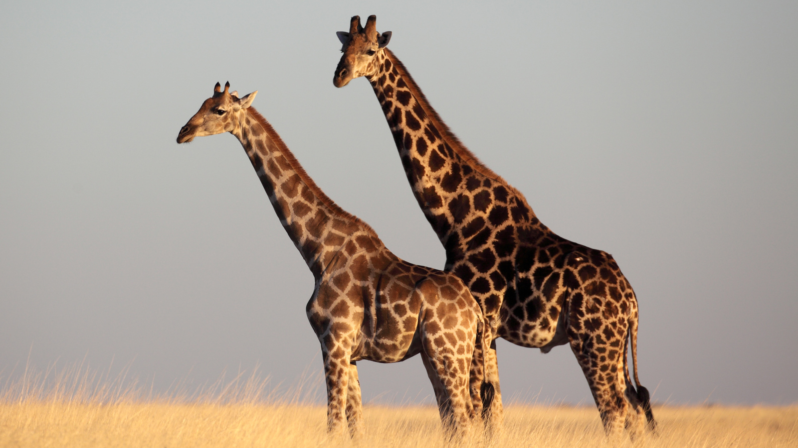
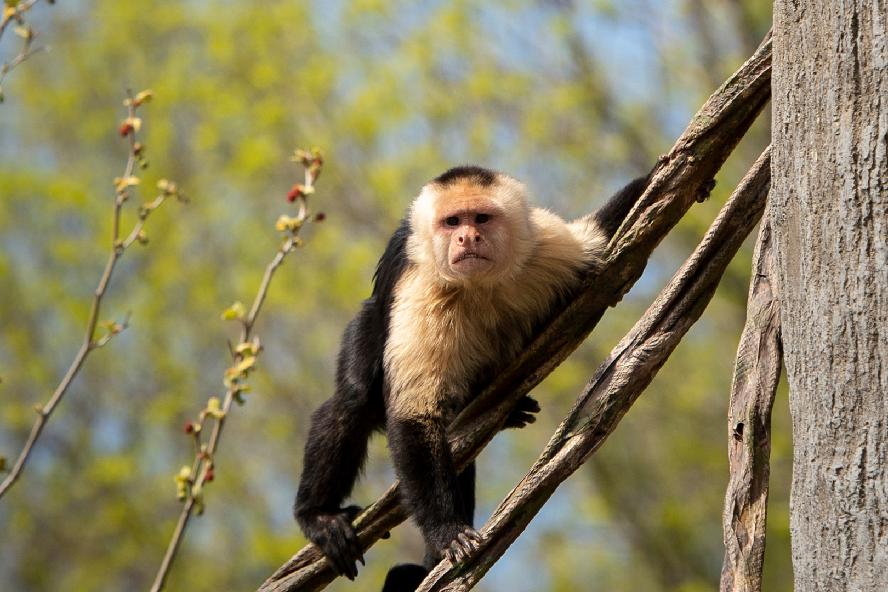
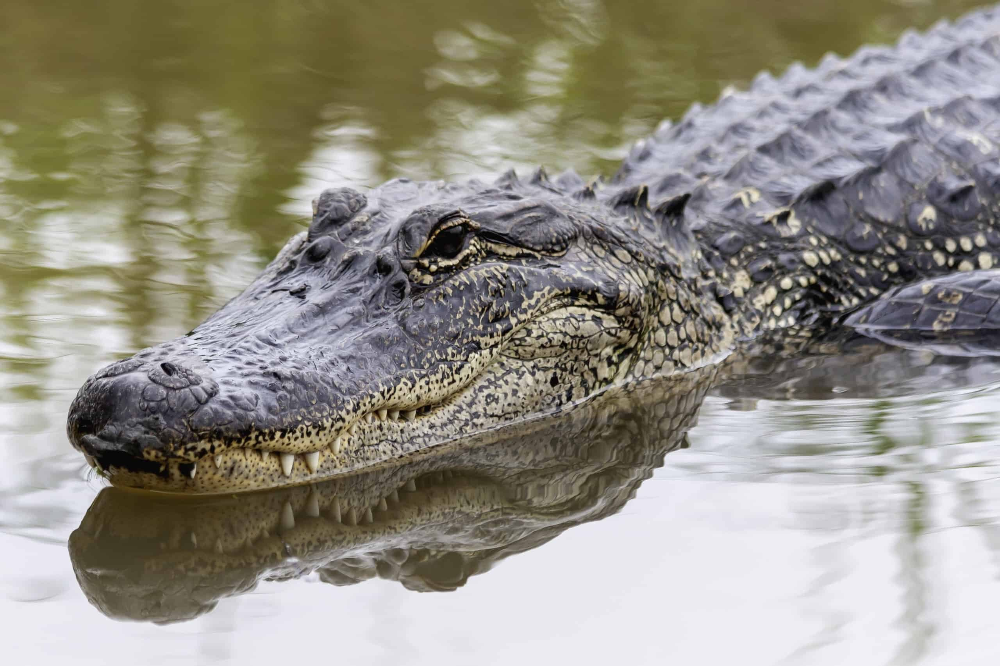

Bears

- Ollie
- Mona
Bears are mammals that belong to the family Ursidae. They can be as
small as four feet long and about 60 pounds (the sun bear) to as big as
eight feet long and more than a thousand pounds (the polar bear). They're
found throughout North America, South America, Europe, and Asia.
More info on Bears
Giraffes
- Frankie
- Coconut
The Giraffe is a large African hoofed mammal belonging to the genus Giraffa
It is the tallest living terrestrial animal and the largest ruminant on earth.
More info on Giraffes
Lions

- Mella
- Karl
The lion is a large cat of the genus Panthera, native to Africa and India.
It has a muscular, broad-chested body; a short, rounded head; round ears; and a
hairy tuft at the end of its tail
More info on Lions
Monkeys
- Cookie
- Earl
- Banana Pudding
The Monkey, in general, any of nearly 200 species of tailed primate, with the exception of lemurs, tarsiers, and lorises.
The presence of a tail (even if only a tiny nub), along with their narrow-chested bodies and other features of
the skeleton, distinguishes monkeys from apes.
More info on Monkeys
Alligators
- Wren
- Aspen
- Mika
An alligator, or colloquially gator, is a large reptile in the Crocodilia order in the genus Alligator of the family Alligatoridae.
The two extant species are the American alligator and the Chinese alligator
More info on Alligators